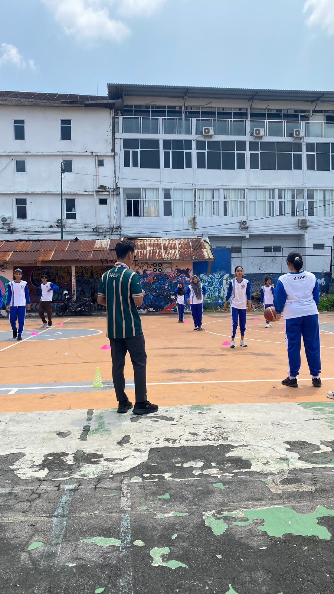
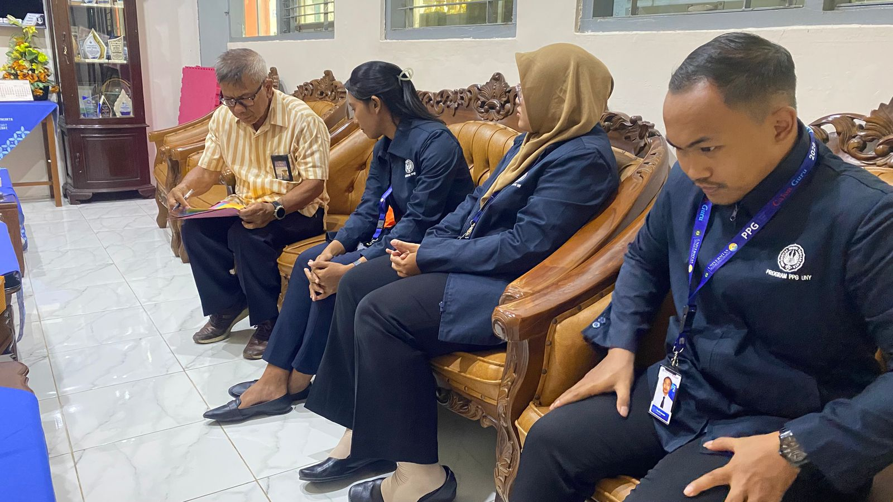
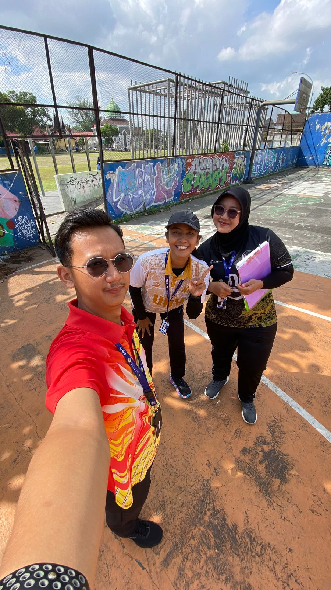
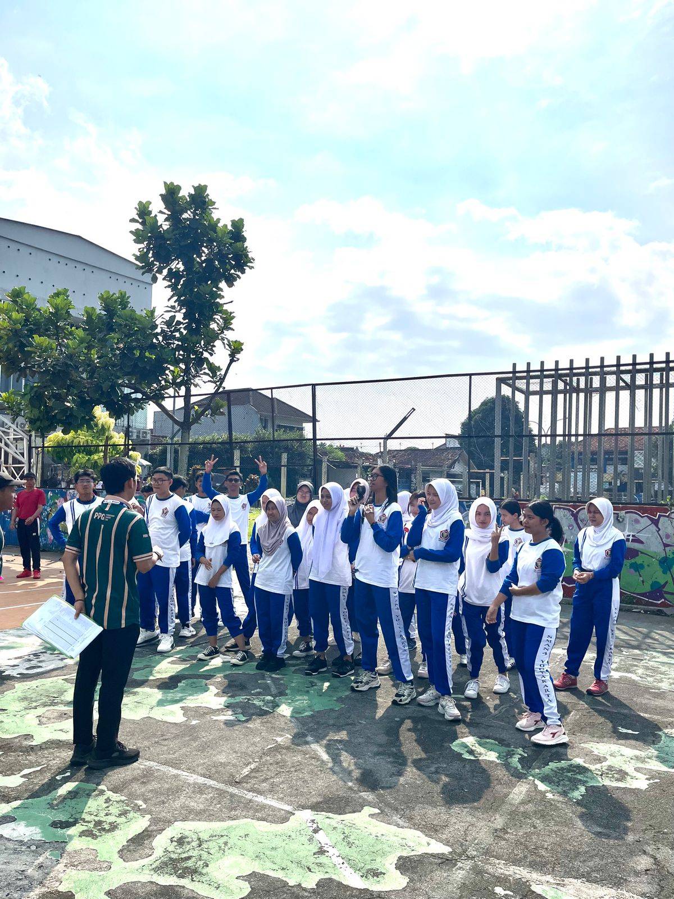
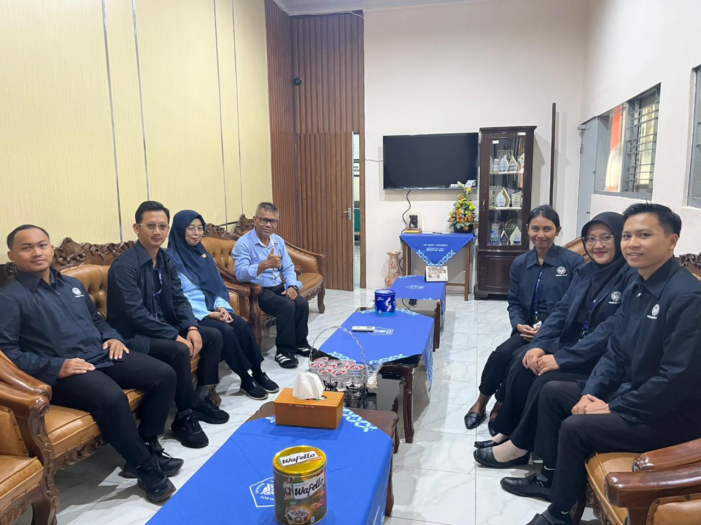
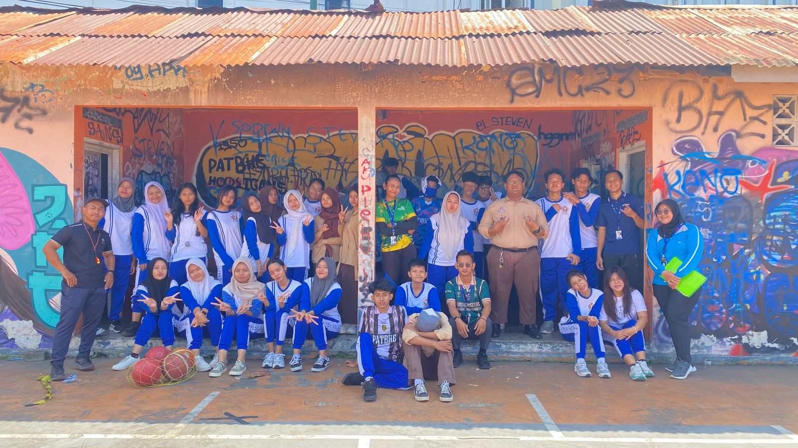
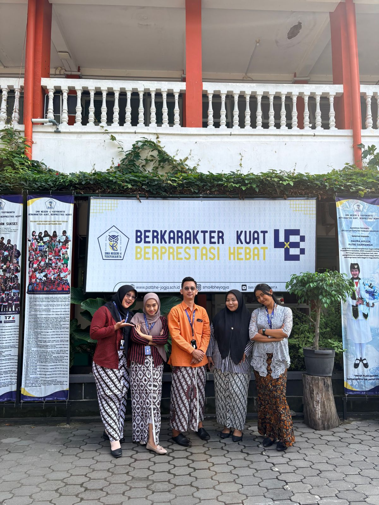
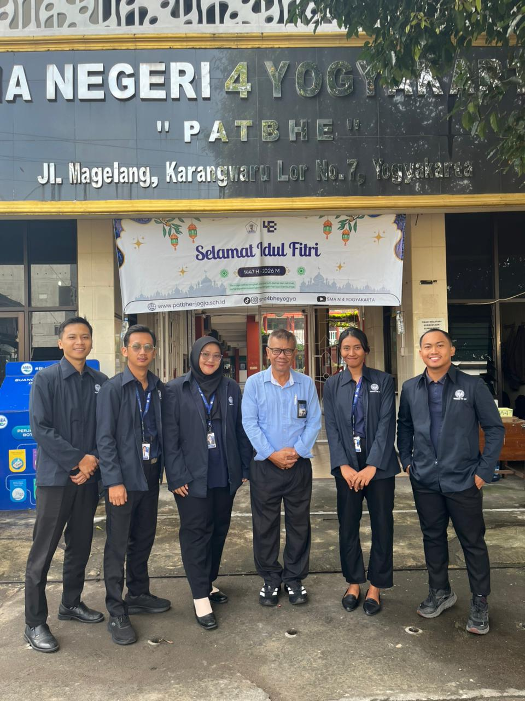

Galeri Dokumentasi PPL
Koleksi rekam jejak visual pelaksanaan Praktik Pengalaman Lapangan (PPL 1 Terbimbing & PPL 2 Mandiri) di SMA Negeri 4 Yogyakarta.

Praktik Mengajar Kelas XI
Praktik mengajar langsung di kelas XI F6 dengan materi Atletik Lari Sprint.

Bimbingan Kelompok DPL
Sesi bimbingan bersama DPL membahas progres dan evaluasi pelaksanaan PPL 1.

Observasi & Foto Bersama
Kegiatan pengenalan iklim lingkungan, sarana prasarana, dan kultur budaya sekolah.

Asesmen Pembelajaran Atletik
Melaksanakan evaluasi sumatif teknik lari sprint 100m di lapangan sekolah.

Monitoring Lapangan DPL
Kunjungan DPL guna memonitor langsung proses pembelajaran terbimbing di kelas.

Foto Bersama Siswa Kelas XI
Momen kebersamaan penuh kehangatan bersama peserta didik kelas XI F6.

Pelestarian Budaya Kamis Pon
Mengenakan busana tradisional adat Jawa gagrak Ngayogyakarta bersama rekan PPL.

Foto Bersama DPL & Guru Pamong
Dokumentasi apresiasi bersama Dosen Pembimbing Lapangan di ruang pertemuan sekolah.

Praktik Mengajar Mandiri
Pelaksanaan pembelajaran mandiri PJOK Fase F di lapangan SMA Negeri 4 Yogyakarta.

Mengawas Ujian ASTS - Sesi 1
Pengecekan kartu peserta dan pembacaan tata tertib Asesmen Sumatif Tengah Semester.

Kondusivitas Ruang ASTS
Memastikan ketenangan dan keteraturan ruangan selama asesmen akademik berlangsung.

Penegakan Integritas ASTS
Menjaga objektivitas dan kejujuran akademik peserta didik saat mengerjakan asesmen.

Skrining Antropometri & Tensi
Pengukuran tinggi, berat badan, indeks massa tubuh (IMT), dan tekanan darah siswa.

Pencatatan Rekam Medis UKS
Mendokumentasikan data riwayat kesehatan fisik siswa bersama tim kesehatan puskesmas.

Konseling Kesehatan & Kebugaran
Edukasi gizi seimbang, pola hidrasi olahraga, dan pencegahan anemia di ruang UKS.

Persiapan Lapangan 17 Agustus
Koordinasi teknis penataan arena perlombaan ketangkasan HUT ke-79 Kemerdekaan RI.

Wasit & Penjurian Lomba
Memimpin jalannya pertandingan ketangkasan antar-kelas dengan asas sportivitas ceria.

Sinergi Panitia & Warga Sekolah
Kekompakan mahasiswa PPL 2 bersama dewan guru dan OSIS menyukseskan perayaan kemerdekaan.

Penarikan Resmi PPL 2
Seremoni pelepasan dan penarikan mahasiswa PPL Mandiri oleh pihak SMA Negeri 4 Yogyakarta.